Air Conditioning Systems · 34-04-03
The right and left defroster nozzles are connected to the plenum chamber with rigid air ducts. Defroster nozzle extensions attached to openings in the upper instrument panel pad assembly seat firmly over the right and left nozzles.
Evaporator Case Assembly
The evaporator case assembly is located on the engine side of the dash panel to the right of the centerline. The blower motor and wheel is in the blower scroll under the right front fender. The case contains the evaporator core, heater core and vacuum operated heater core Restrictor Air Door (3).
Plenum Chamber Assembly
The plenum chamber located under the instrument panel contains the Temperature Blend Door (5), AC/Heat Door (6) and Heat/Defrost Door (7). Two rectangular openings in the dash panel provide air passage from the evaporator case into the plenum. An air distribution duct attached to an opening in the lower plenum provides air distribution to the front floor area and also to the rear

Fig. 7 — Falcon A/C-Heater Control Assembly

Fig. 8 — Fairlane A/C-Heater Control Assembly
seat duct. Two round openings on the plenum air distribution chamber are provided to discharge air to the right and left defroster nozzles.
Refrigerant System Components
Evaporator Core
The evaporator core is located in the center of the evaporator case. An external liquid bleed line leads to the suction throttling valve outside the case.
Expansion Valve
The function of the expansion valve (Fig. 14) is to automatically regulate the flow of refrigerant into the evaporator, and is the dividing point in the system between the high and low pressure liquid refrigerant.
The temperature sensing bulb, clamped to the outlet tube on the evaporator measures the temperature of the evaporator outlet tube and transmits the temperature variation to the expansion valve.
An external equalizer line connects the expansion valve to the suction throttling valve. The equalizer line is used primarily to prevent prolonged or constant operation of the compressor under conditions where it is not receiving enough refrigerant. The equalizer line functions to permit the outlet pressure of the suction throttling valve to be imposed on the diaphragm of the expansion valve.
When the outlet pressure of the suction throttling valve drops below a predetermined pressure, this decrease in pressure is also transmitted to the diaphragm of the expansion valve, via the equalizer line. The expansion valve is caused to open and flood refrigerant through the evaporator, thereby resulting in an increase in the evaporator pressure. This action only occurs during times when the compressor capacity becomes greater than the evaporator output with the resultant drop in suction throttling valve outlet pressure.
Suction Throttling Valve
The suction throttling valve (Fig. 15) regulates the pressure inside the evaporator and thereby affects the air temperature at the instrument panel outlets. The valve has a sealed inner chamber which controls the pressure regulating mechanism of the valve independently of the exterior atmospheric pressure. This design insures that the valve does not change its calibration as the system is operated in various altitudes. It should be remembered; however, that any gauge used to check the valve pressure will not be free from the effect of atmospheric pressure. For this reason it might appear that it is the pressure within the valve that is changing. Actually the reverse is true. The pressure within the valve remains unaffected by atmospheric variations, while the gauge used to read these pressures is affected by atmospheric pressure.
Sight Glass
The sight glass is located in the liquid line between the expansion valve and the receiver.
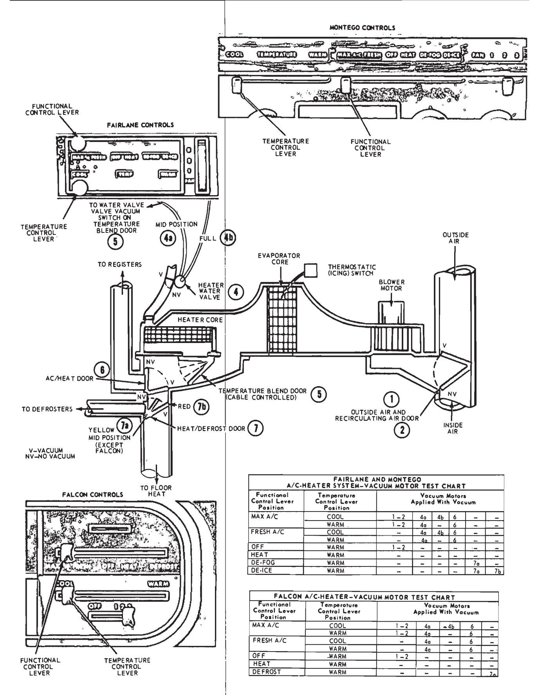
Fig. 9 — Falcon, Fairlane, and Montego Control Setting Vacuum Motor Application Chart
Condenser and Receiver Assembly
The condenser and receiver assemblies are located forward of the radiator core.
Air Conditioner Compressor
The compressor is located on the left front corner of the engine in a horizontal position. The compressor drive belt arrangement is shown in Fig. 64.
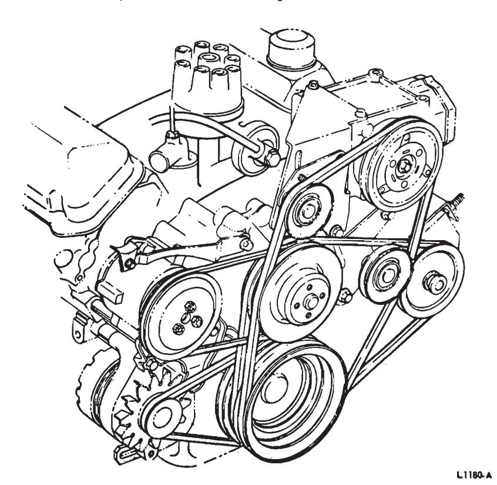
Fig. 64 — Manual A/C-Heater Compressor Belt Arrangement—Lincoln ContinentalThunderbird and Continental Mark III
The manual air conditioner and heater system is an integral system receiving outside air from the cowl air intake through the outside air door (1), or recirculated air through the recirculating air door (2), in the right cowl side panel.
Air is discharged into the passenger compartment through the same registers and ducts that are used in the heating and forced ventilation system.
The basic difference between the A/C-heater system and the heater and forced ventilation system is the A/C components and the operation of the outside air (1) and recirculating air (2) door.
Control Operation
The control assembly is located in the same place as the control assembly used in the heater and forced ventilation system. Replacement procedures are the same for both control assemblies (See Heating System, Part 34-03).
The functional control (upper) lever (Figs. 16, 17, 18 and 19), actuates a vacuum regulator that controls vacuum motors at the outside air (1) recirculating air (2) door, AC/Heat Door (6), heat/defrost door (7) restrictor air door (3), and the heater water valve (4). A cam plate on the regulator also actuates a micro switch to control the A/C clutch. The switch is normally open in all control positions other than the A/C position.
The temperature control (lower) lever operates a Bowden cable that controls the temperature blend door (5) in the plenum chamber and mixes the air through the evaporator core with the warm air through the heater
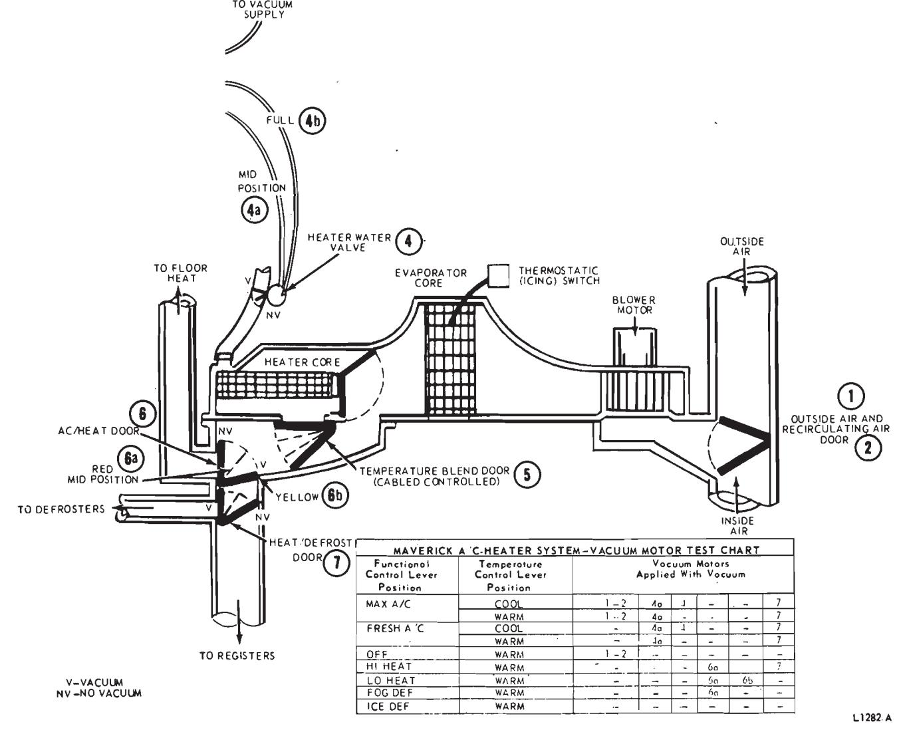
Fig. 10 — Maverick A/C-Heater Control Setting Vacuum Motor Application Chart
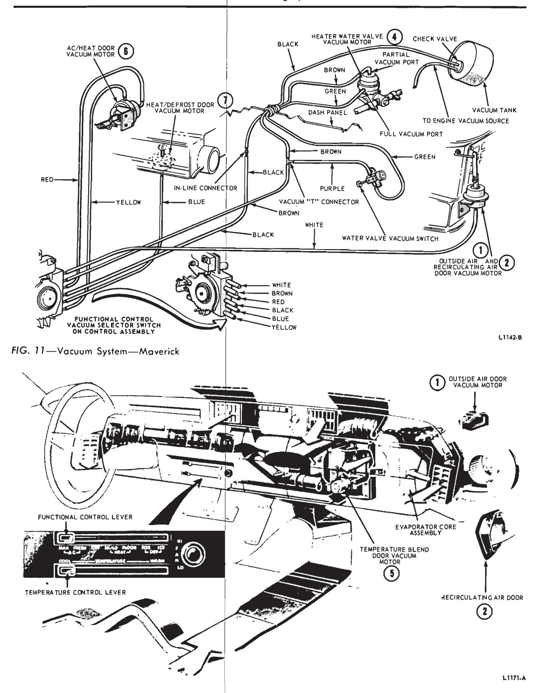
Fig. 12 — Manual A/C-Heater System Air Flow (Maximum A/C Position)—Lincoln Continental
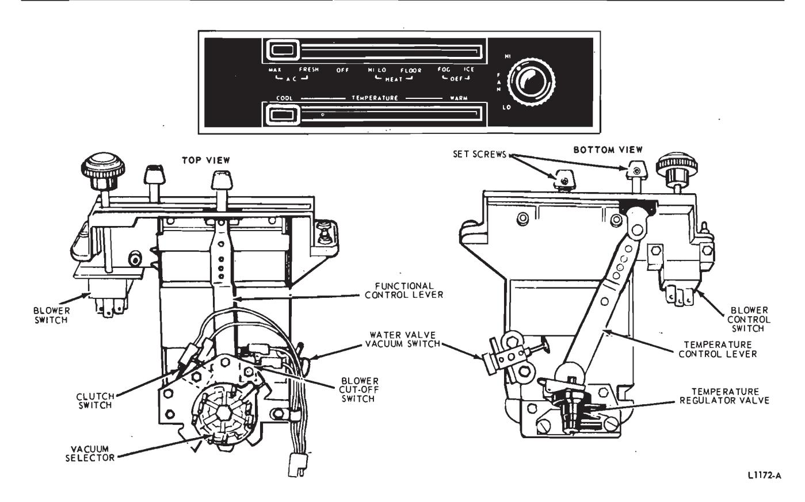
Fig. 13 — Manual A/C-Heater Control Assembly—Lincoln Continental
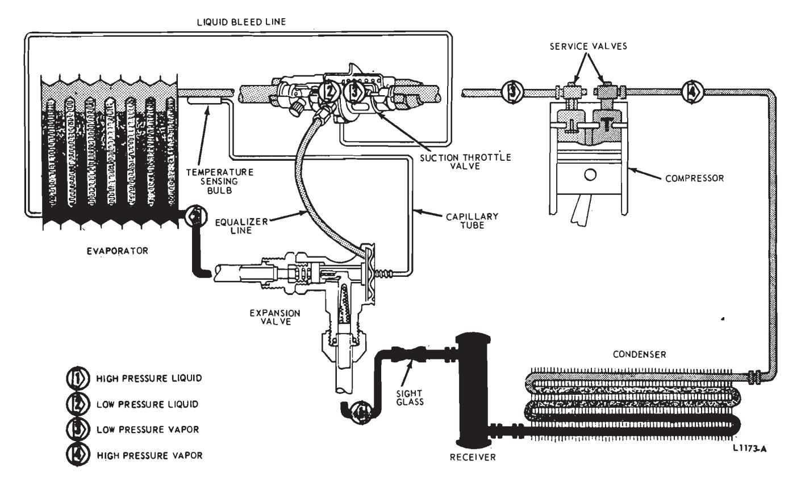
Fig. 14 — A/C Refrigeration Circuit Diagram
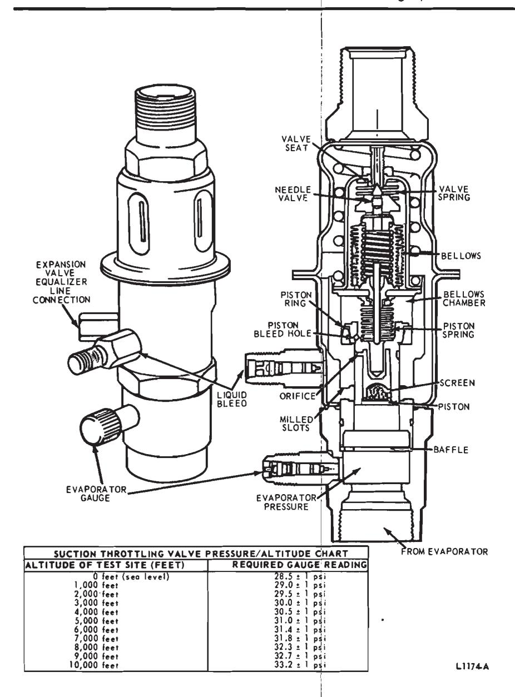
Fig. 15 — Suction Throttling Valve and Pressure/Altitude Chart
core in direct proportion to the temperature blend door (5) setting or control requirements.
A vacuum water valve switch located on the bottom of the control assembly is actuated by the temperature control lever in the COOL position to close the heater water valve (4). The heater water valve (4) is also closed in the OFF position of the functional control by vacuum control in the select or regulator.
A three-speed blower switch located under the temperature control lever of the head assembly controls air velocity and must be turned on to engage the A/C clutch for air conditioning. An optional rear window defogger switch is mounted to the right of the blower switch (Fig. 16). (See Heating
System, Part 34-03 for information on the rear window defogger).
Air Elow
Air is drawn into the system by the blower motor from the cowl air intake through the outside air door (1) (upper control in the AC-FRESH position); or through the recirculating air door (2) in the cowl side panel (upper control in the MAX-AC position) (Figs. 17 and 18). The air is then forced through the evaporator core and when the restrictor air door (3) is closed (AC position) and the temperature blend door (5) is in the maximum COOL (TEMP control at COOL) position, the air by-passes the heater core. With the temperature blend door (5) in a modulated position, a small percentage of air passes through the heater core through a built-in opening in the lower section of the restrictor air door (3) frame. With the upper control in the HEAT-/DEFROST position, the restrictor air door (3) is open and air flow through the core is controlled in direct proportion to the setting of the temperature blend door (5) that mixes the air as it enters the plenum chamber.
With the controls set in either MAX or FRESH AC position, the AC/heat door (6) in the plenum restricts air to the heater outlets, and cold air is discharged through the four registers with approximately 15 percent bleed air to the floor.
With the controls set in the HEAT position, the AC/heat door (6) restricts air to the registers: the Heat/Defrost door (7) is in the heat position and warm air is discharged through the heater air outlets near the tunnel with approximately 10 percent bleed air going to the defrosters.
With the control set in the HEAT position, the AC/heat door (6) restricts air to the registers; the Heat/Defrost door (7) is in the heat position and warm air is discharged through the heater air outlets near the tunnel with approximately 10 percent bleed air going to the defrosters.
With the control set in Heat and Defrost position (Fig. 16), the Heat-/Defrost door (7) is in a mid-position and approximately 40 percent of the air goes to the defrosters and the rest goes down through the heater outlet openings.
In Defrost Only position (Fig. 16), the Heat/Defrost door (7) is in the Defrost Only position (Fig. 16), and practically all the air is forced through the two defroster outlets with a small amount of bleed air going to the heater outlets.
A four-position blower switch and resistor assembly provides three blower speeds to control the air quantity. The blower switch must be on to engage the A/C clutch for air conditioning.
Vacuum System
Fig. 18 shows the various air conditioner-heater control positions and the vacuum motor applications for those positions. Fig. 19 shows the location of the vacuum and Bowden cable actuated components and the vacuum system schematic.
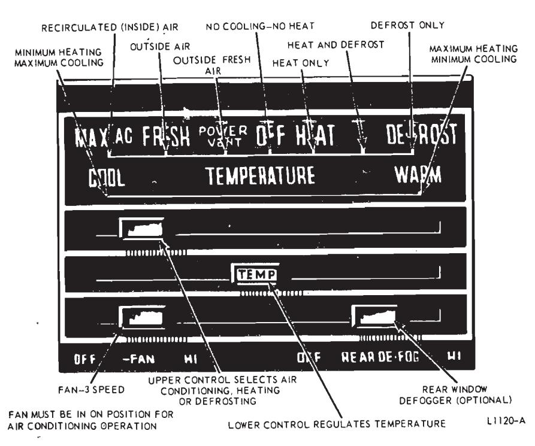
Fig. 16 — Heater-A/C Controls—Thunderbird and Continental Mark III
Air Conditioner Components
Receiver Unit
The air conditioning system stores the liquid Refrigerant-12 under pressure in a combination receiver and dehydrator (Fig. 20). The pressure in the receiver normally varies from about 80 to 300 psi, depending on the surrounding air temperature and compressor speed.
The dehydrator serves the purpose of removing any traces of moisture that may have accumulated in the system. Even small amounts of moisture will cause an air cooling unit to malfunction. A tusible plug is screwed into the receiver. This will release the refrigerant before the refrigerant temperature exceeds 212 degrees F.
Evaporator Unit
When the cooling system is in operation, the liquid Refrigerant-12 flows from the combination receiver and dehydrator unit through a flexible hose to the evaporator (Fig. 20) where it is allowed to evaporate at a reduced
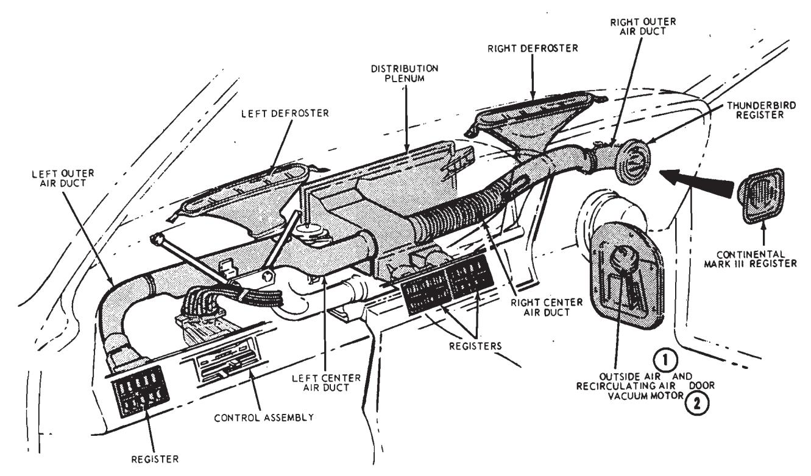
Fig. 17 — A/C System Component Locations—Thunderbird and Continental Mark III
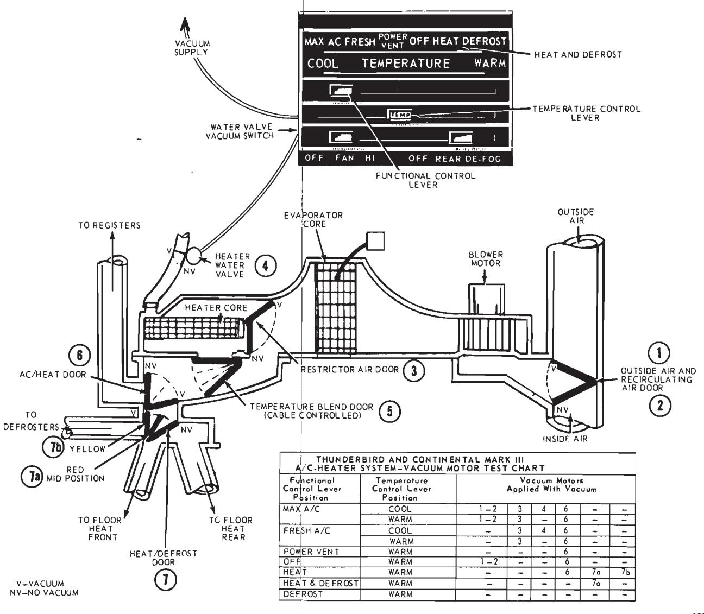
Fig. 18 — Control Setting Vacuum Motor Application Chart—Thunderbird and Continental Mark III
pressure, to cool the evaporator. Air is blown through the evaporator fins and is thus cooled by the evaporator.
Expansion Valve
The rate of refrigerant evaporation is controlled by an expansion valve (Fig. 20) which allows only enough refrigerant to flow into the evaporator to keep the evaporator operating efficiently, depending on its heat load.
The expansion valve on all models except Falcon, Fairlane and Montego consists of the valve and a temperature sensing capillary tube and bulb. The bulb is clamped to the outlet pipe of the evaporator. The expansion valve used on Falcon, Fairlane, and Montego is connected in line with both the inlet and outlet evaporator refrigerant lines. By use of internal passage’s leading to and from the underside of the valve diaphragm, the diaphragm senses the refrigerant temperature and pressure as it leaves the evaporator core. Thus the valve is controlled by evaporator outlet temperature
The estricting effect of the expansion valve at the evaporator causes a low pressure on the low pressure side of the system of 12 to 50 psi, depending on the surrounding air temperature and compressor speed.
Condenser
The air conditioning conderser, located in front of the radiator, receives heated and compressed refrigerant gas from the compressor.
As the refrigerant gas flows down through the condenser, it is cooled by air passing between the sections of the conderser. The cooled, compressed refrigerant gas condenses to liquid refrigerant which then flows into the receiver.
Compressor Unit
The evaporated refrigerant leaving the evaporator (now in the form of a gas) at a pressure of 12 to 50 psi is pumped by the compressor, located on the engine (Fig. 21), into the top of the condenser, flocated in front of the radiator.
The compressor maintains a pressure on its high pressure side of from 80 to 300 psi, depending on the surrounding air temperature and compressor speed.
As the now heated and compressed refrigerant gas flows down through
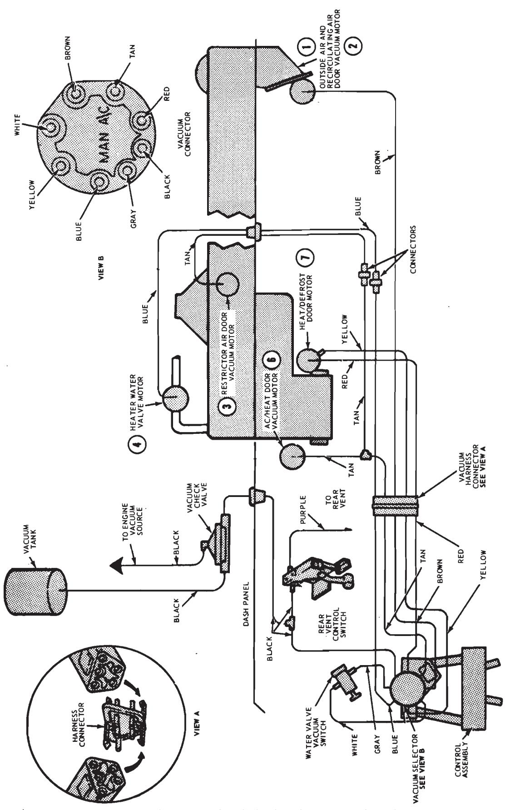
Fig. 19 — A/C-Heater System Vacuum Schematic —Thunderbird and Continental Mark III
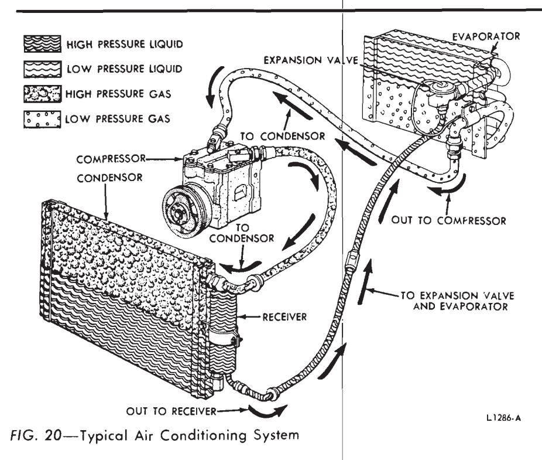
Fig. 21 — Compressor Installed
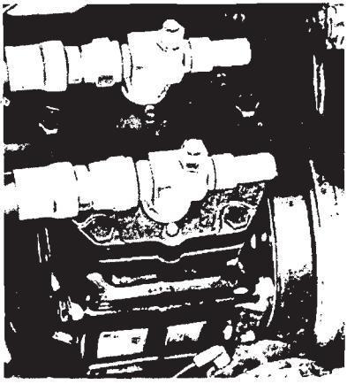
the condenser, it is cooled by air passing between the sections of the condenser. The cooled, compressed refrigerant which then flows into the receiver.
Liquid Sight Glass
A liquid sight glass is mounted in the high pressure refrigerant line between the receiver and the expansion valve (Fig. 20). The sight glass is used to check whether there is enough liquid refrigerant in the system.
Magnetic Clutch
It is necessary to control the temperature of the evaporator assembly.
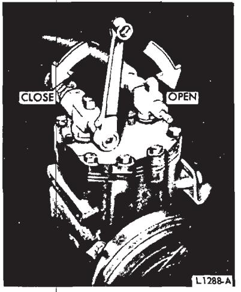
Fig. 22 — Low Pressure Service Valve Gauge Port
To accomplish this, the compressor is cut in and out of operation by an electrically operated magnetic clutch mounted on the compressor crankshaft. The magnetic clutch is controlled by the blower switch, a clutch switch which is a vacuum actuated electrical switch, and the icing switch.
Thermostatic (ICING) Switch
The thermostatic (icing) switch is connected in series with the blower switch and the clutch switch and controls the operation of the compressor by controlling the compressor mag- netic clutch. The temperature sensing tube of the switch is placed in contact with the evaporator fins. When the temperature of the evaporator becomes too cold, the switch opens the magnetic clutch electrical circuit, disconnecting the compressor from the engine. When the temperature of the evaporator rises, the thermostatic (icing) switch closes and energizes the magnetic clutch. This connects the compressor to the engine, and cooling action begins again.
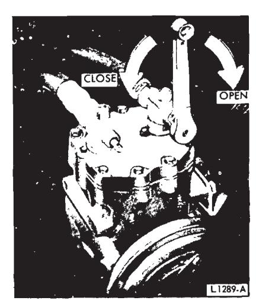
Fig. 23 — High Pressure Service Valve Gauge Port
When the blower switch is off or the functional control lever is not in an A/C position, the magnetic clutch cannot be energized for compressor operation.
When the blower switch is on and the functional control lever is in the cooling range, the magnetic clutch is controlled by the thermostatic (icing) switch which is controlled by the evaporator temperature.
Service Valves
The service valves on the compresor are used to test and service the cooling system (Figs. 22 and 23). The high pressure service valve, mounted at the outlet to the compressor, allows access to the high pressure side of the system for attaching a service hose with attached pressure gauge.
The low pressure valve, mounted at the inlet to the compressor, allows access to the low pressure side of the system for attaching a service hose with attached pressure gauge.
Both service valves may be used to shut off the rest of the system from the compressor during compressor service.